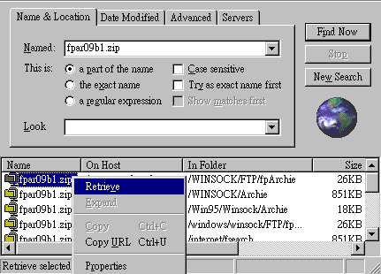
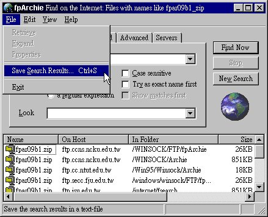

下 載 檔 案
找 到 你 要 找 的 檔 案 之 後 , 便 可 將 它 下 載。
其 下 載 方 法 為 :
選 取 要 下 載 的 檔 案。
在 此 檔 案 上 按 滑 鼠 右 鍵 , 選 取 Retrieve , 進 行 下 載。
下 圖 以 找 尋 fpar09b1.zip 為 例。

儲 存 結 果
如 欲 將 儲 存 結 果 儲 存 成 text 檔 , 則 選 取「File/Save Search Results」, 如 下 圖

則可進行存檔